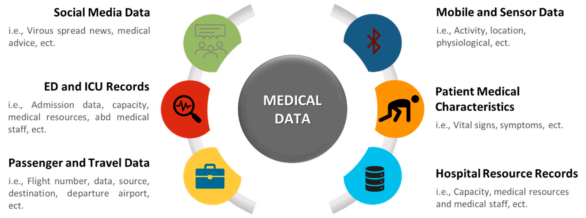

Enterprise systems that have functions and functionality for big data applications are known as big data analytics platforms. It helps companies to reveal previously overlooked correlations, market trends, and valuable information from a large amount of big data. Tables 3 and 4 show the most popular big data analytics platforms and data storage management, respectively.
| Tool | Description | Main Features | Availability |
|---|---|---|---|
| Apache Hadoop | Data storage and distributed processing. | Distributed parallel processing of large amounts of data by using Hadoop Distributed File System (HDFS), and the MapReduce YARN (“Yet Another Resource Negotiator”) | Open source |
| IBM | IBM provides a variety of big data tools including: IBM big SQL Apache Spark Big Integrate | Text Analytics Data Visualize Artificial Intelligence | Commercial |
| Amazon | Data analysis systems | Data Storage Data Analytics | Commercial |
| Microsoft Azur | It is a big data platform that is cloud-based and used for developing, analyzing, installing, and managing applications | It provides the following services: Software as a service (SAAS). Platform as a service | Azure free account and get popular services free for 12 months. |
4. Findings, Challenges, and Future Directions This section is organized as follows. First, Section 4.1 provides our findings from the literature review conducted in Section 2. Section 4.2 discusses the key challenges that were faced when designing big data analytics solutions to address the COVID-19 pandemic. Section 4.3 presents several future directions to be considered by researchers and authorities. 4.1. Findings This section is organized as follows. First, Section 4.1.1 introduces the type and source of data that can be used in healthcare solutions. Then, Section 4.1.2 introduces the type and source of COVID-19 data found in the literature.
